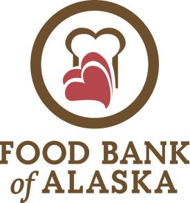
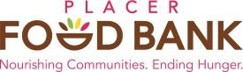
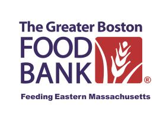
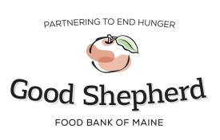
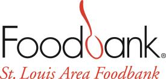
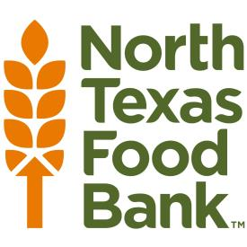

200 Feeding America Food Banks that serve the United States
Feeding America food banks serve large areas and will be able to find a feeding program in your local community.

aleutians east, aleutians west, anchorage, bethel, bristol bay, denali, dillingham, fairbanks north star, haines, hoonah angoon, juneau, kenai peninsula, ketchikan gateway, kodiak island, kusilvak, lake and peninsula, matanuska-susitna, nome, north slope, northwest arctic, petersburg, prince of wales-hyder, sitka, skagway, southeast fairbanks, wrangell city and borough, yakutat, yukon-koyukuk
Food Bank of Alaska, Inc.
2192 Viking Drive
Anchorage, AK 99501
907.272.3663
aleutians east, aleutians west, anchorage, bethel, bristol bay, denali, dillingham, fairbanks north star, haines, hoonah angoon, juneau, kenai peninsula, ketchikan gateway, kodiak island, kusilvak, lake and peninsula, matanuska-susitna, nome, north slope, northwest arctic, petersburg, prince of wales-hyder, sitka, skagway, southeast fairbanks, wrangell city and borough, yakutat, yukon-koyukuk
Counties Served: aleutians east, aleutians west, anchorage, bethel, bristol bay, denali, dillingham, fairbanks north star, haines, hoonah angoon, juneau, kenai peninsula, ketchikan gateway, kodiak island, kusilvak, lake and peninsula, matanuska-susitna, nome, north slope, northwest arctic, petersburg, prince of wales-hyder, sitka, skagway, southeast fairbanks, wrangell city and borough, yakutat, yukon-koyukuk
Community Food Bank of Central Alabama
107 Walter Davis Drive
Birmingham, AL 35209
205.942.8911
blount, calhoun, cherokee, clay, cleburne, etowah, jefferson, st. clair, shelby, talladega, walker, winston
Counties Served: blount, calhoun, cherokee, clay, cleburne, etowah, jefferson, st. clair, shelby, talladega, walker, winston
Food Bank of North Alabama
2000 B. Vernon Ave.
P.O. Box 18607
Huntsville, AL 35805
256.539.2256
colbert, cullman, dekalb, franklin, jackson, lauderdale, lawrence, limestone, madison, marshall, morgan
Counties Served: colbert, cullman, dekalb, franklin, jackson, lauderdale, lawrence, limestone, madison, marshall, morgan
Montgomery Area Food Bank
521 Trade Center Street
Montgomery, AL 36108
334.263.3784
autauga, barbour, bibb, bullock, butler, chambers, chilton, coffee, coosa, crenshaw, dale, dallas, elmore, fayette, geneva, greene, hale, henry, houston, lamar, lee, lowndes, macon, marengo, marion, montgomery, perry, pickens, pike, randolph, sumter, tallapoosa, tuscaloosa, wilcox
Counties Served: autauga, barbour, bibb, bullock, butler, chambers, chilton, coffee, coosa, crenshaw, dale, dallas, elmore, fayette, geneva, greene, hale, henry, houston, lamar, lee, lowndes, macon, marengo, marion, montgomery, perry, pickens, pike, randolph, sumter, tallapoosa, tuscaloosa, wilcox
Feeding the Gulf Coast
5248 Mobile South Street
Theodore, AL 36582
251.653.1617
baldwin, choctaw, clarke, conecuh, covington, escambia, mobile, monroe, washington, bay, escambia, holmes, okaloosa, santa rosa, walton, washington, george, greene, hancock, harrison, jackson, pearl river, perry, stone
Counties Served: baldwin, choctaw, clarke, conecuh, covington, escambia, mobile, monroe, washington, bay, escambia, holmes, okaloosa, santa rosa, walton, washington, george, greene, hancock, harrison, jackson, pearl river, perry, stone
Northwest Arkansas Food Bank
1378 June Self Drive
Bethel Heights, AR 72764
479.872.8774
benton, carroll, madison, washington
Counties Served: benton, carroll, madison, washington
River Valley Regional Food Bank
1617 South Zero Street
PO Box 180070
Ft. Smith, AR 72918
479.785.0582
crawford, franklin, johnson, logan, polk, scott, sebastian, yell
Counties Served: crawford, franklin, johnson, logan, polk, scott, sebastian, yell
Food Bank of Northeast Arkansas
3414 One Place
P.O. Box 2097
Jonesboro, AR 72402
870.932.3663
baxter, boone, clay, craighead, cross, fulton, greene, izard, jackson, lawrence, marion, mississippi, newton, poinsett, randolph, st. francis, searcy, sharp, stone, woodruff
Counties Served: baxter, boone, clay, craighead, cross, fulton, greene, izard, jackson, lawrence, marion, mississippi, newton, poinsett, randolph, st. francis, searcy, sharp, stone, woodruff

Arkansas Foodbank
4301 W 65th St
Little Rock, AR 72209
859.255.6592
arkansas, ashley, bradley, calhoun, chicot, clark, cleburne, cleveland, conway, dallas, desha, drew, faulkner, garland, grant, hot spring, independence, jefferson, lee, lincoln, lonoke, monroe, montgomery, ouachita, perry, phillips, pope, prairie, pulaski, saline, union, van buren, white
Counties Served: arkansas, ashley, bradley, calhoun, chicot, clark, cleburne, cleveland, conway, dallas, desha, drew, faulkner, garland, grant, hot spring, independence, jefferson, lee, lincoln, lonoke, monroe, montgomery, ouachita, perry, phillips, pope, prairie, pulaski, saline, union, van buren, white
Harvest Regional Food Bank, Inc.
3120 East 19th Street
P.O. Box 707
Texarkana, AR 71854
870.774.1398
www.harvestregionalfoodbank.org
columbia, hempstead, howard, lafayette, little river, miller, nevada, pike, sevier, bowie
Counties Served: columbia, hempstead, howard, lafayette, little river, miller, nevada, pike, sevier, bowie

United Food Bank
245 South Nina Drive
Mesa, AZ 85210
480.926.4897
apache, gila, maricopa, navajo, pinal
Counties Served: apache, gila, maricopa, navajo, pinal
St. Marys Food Bank
2831 N. 31st Avenue
Phoenix, AZ 85009
602.352.3640
apache, coconino, maricopa, mohave, navajo, pinal, yavapai
Counties Served: apache, coconino, maricopa, mohave, navajo, pinal, yavapai
Community Food Bank of Southern Arizona
3003 South Country Club Road
Tucson, AZ 85713
520.622.0525
cochise, graham, greenlee, pima, santa cruz
Counties Served: cochise, graham, greenlee, pima, santa cruz
Yuma Community Food Bank
2404 E 24th St. Ste. A
Yuma, AZ 85365
928.343.1243
la paz, yuma
Counties Served: la paz, yuma
Food Bank of Contra Costa and Solano
4010 Nelson Ave
Concord, CA 94520
925.676.7543
butte, colusa, contra costa, glenn, lassen, modoc, napa, plumas, sacramento, shasta, sierra, siskiyou, solano, sutter, tehama, trinity, yolo, yuba
Counties Served: butte, colusa, contra costa, glenn, lassen, modoc, napa, plumas, sacramento, shasta, sierra, siskiyou, solano, sutter, tehama, trinity, yolo, yuba
Central California Food Bank
4010 E. Amendola Ave.
Fresno, CA 93725
559.237.2527
fresno, kern, kings, madera, tulare
Counties Served: fresno, kern, kings, madera, tulare
FIND Food Bank
83-775 Citrus Ave
P.O. Box 10080
Indio, CA 92202
760.775.3663
imperial, riverside, san bernardino
Counties Served: imperial, riverside, san bernardino
Second Harvest Food Bank of Orange County
8014 Marine Way
Irvine, CA 92618
949.653.2900
orange
Counties Served: orange
Los Angeles Regional Food Bank
1734 E. 41st Street
Los Angeles, CA 90058
323.234.3030
los angeles
Counties Served: los angeles
Second Harvest of the Greater Valley
1220 Vanderbilt Cir
Manteca, CA 95337
209.239.2091
alpine, amador, calaveras, mariposa, merced, san joaquin, stanislaus, tuolumne
Counties Served: alpine, amador, calaveras, mariposa, merced, san joaquin, stanislaus, tuolumne

Alameda County Community Food Bank
7900 Edgewater Drive
P.O. Box 2599
Oakland, CA 94621
510.635.3663
alameda
Counties Served: alameda
Feeding America Riverside | San Bernardino Counties
2950 - A Jefferson Street
Riverside, CA 92504
951.359.4757
riverside, san bernardino
Counties Served: riverside, san bernardino

el dorado, nevada, placer
Placer Food Bank
8284 Industrial Ave
Roseville, CA 95678
916.783.0481
el dorado, nevada, placer
Counties Served: el dorado, nevada, placer
Food Bank for Monterey County
815 W. Market Street, Suite 5
Salinas, CA 93901
831.758.1523
www.foodbankformontereycounty.org
monterey
Counties Served: monterey
Feeding San Diego
9477 Waples Street, Suite 100
San Diego, CA 92121
858.452.3663
san diego
Counties Served: san diego
SF-Marin Food Bank
900 Pennsylvania Avenue
San Francisco, CA 94107
415.282.1900
marin, san francisco
Counties Served: marin, san francisco
Second Harvest of Silicon Valley
750 Curtner Avenue
San Jose, CA 95125
408.266.8866
san mateo, santa clara
Counties Served: san mateo, santa clara
Foodbank of Santa Barbara County
4554 Hollister Avenue
Santa Barbara, CA 93110
805.967.5741
san luis obispo, santa barbara
Counties Served: san luis obispo, santa barbara
Redwood Empire Food Bank
3990 Brickway Blvd
Santa Rosa, CA 95403
707.523.7900
del norte, humboldt, lake, mendocino, sonoma
Counties Served: del norte, humboldt, lake, mendocino, sonoma
Second Harvest Food Bank Santa Cruz County
800 Ohlone Parkway
Watsonville, CA 95076
831.722.7110
san benito, santa cruz
Counties Served: san benito, santa cruz
Care and Share Food Bank
2605 Preamble Point
Colorado Springs, CO 80915
719.528.1247
alamosa, archuleta, baca, bent, chaffee, cheyenne, conejos, costilla, crowley, custer, dolores, el paso, fremont, gunnison, hinsdale, huerfano, kiowa, la plata, las animas, lincoln, mineral, montezuma, otero, ouray, prowers, pueblo, rio grande, saguache, san juan, san miguel, teller
Counties Served: alamosa, archuleta, baca, bent, chaffee, cheyenne, conejos, costilla, crowley, custer, dolores, el paso, fremont, gunnison, hinsdale, huerfano, kiowa, la plata, las animas, lincoln, mineral, montezuma, otero, ouray, prowers, pueblo, rio grande, saguache, san juan, san miguel, teller
Food Bank of the Rockies
10700 E. 45th Ave
Denver, CO 80239
303.371.9250
adams, arapahoe, clear creek, delta, denver, douglas, eagle, elbert, garfield, gilpin, grand, jackson, jefferson, kit carson, lake, lincoln, logan, mesa, moffat, montrose, morgan, park, phillips, pitkin, rio blanco, routt, sedgwick, summit, washington, yuma, albany, big horn, campbell, carbon, converse, crook, fremont, goshen, hot springs, johnson, laramie, lincoln, natrona, niobrara, park, platte, sheridan, sublette, sweetwater, teton, uinta, washakie, weston
Counties Served: adams, arapahoe, clear creek, delta, denver, douglas, eagle, elbert, garfield, gilpin, grand, jackson, jefferson, kit carson, lake, lincoln, logan, mesa, moffat, montrose, morgan, park, phillips, pitkin, rio blanco, routt, sedgwick, summit, washington, yuma, albany, big horn, campbell, carbon, converse, crook, fremont, goshen, hot springs, johnson, laramie, lincoln, natrona, niobrara, park, platte, sheridan, sublette, sweetwater, teton, uinta, washakie, weston

Community Food Share
650 S. Taylor Ave.
Louisville, CO 80027
303.652.3663
boulder, broomfield
Counties Served: boulder, broomfield
Food Bank for Larimer County
5706 Wright Drive
Loveland, CO 80538
970.493.4477
larimer
Counties Served: larimer
Connecticut Foodshare
2 Research Parkway
Wallingford, CT 06492
203.469.5000
fairfield, hartford, litchfield, middlesex, new haven, new london, tolland, windham
Counties Served: fairfield, hartford, litchfield, middlesex, new haven, new london, tolland, windham
Capital Area Food Bank
4900 Puerto Rico Ave NE
Washington, DC 20017
202.644.9800
district of columbia, montgomery, prince george's, arlington, fairfax, prince william, alexandria (city), fairfax (city), falls church (city), manassas (city), manassas park (city)
Counties Served: district of columbia, montgomery, prince george's, arlington, fairfax, prince william, alexandria (city), fairfax (city), falls church (city), manassas (city), manassas park (city)
Food Bank of Delaware
222 Lake Drive
Newark, DE 19702
302.292.1305
kent, new castle, sussex
Counties Served: kent, new castle, sussex
Harry Chapin Food Bank of Southwest Florida
3760 Fowler St.
Ft. Myers, FL 33901
239.334.7007
charlotte, collier, glades, hendry, lee
Counties Served: charlotte, collier, glades, hendry, lee
Treasure Coast Food Bank
401 Angle Rd.
Ft. Pierce, FL 34947
772.489.3034
indian river, martin, okeechobee, st. lucie
Counties Served: indian river, martin, okeechobee, st. lucie
Feeding Northeast Florida
1116 Edgewood Avenue North, Units D and E
Jacksonville, FL 32254
904.513.1333
baker, bradford, clay, duval, flagler, nassau, putnam, st. johns
Counties Served: baker, bradford, clay, duval, flagler, nassau, putnam, st. johns

Second Harvest Food Bank of Central Florida
411 Mercy Drive
Orlando, FL 32805
407.295.1066
alachua, brevard, gilchrist, lake, levy, marion, orange, osceola, seminole, union, volusia
Counties Served: alachua, brevard, gilchrist, lake, levy, marion, orange, osceola, seminole, union, volusia
Feeding South Florida
2501 SW 32 Terrace
Pembroke Park, FL 33023
954.518.1818
broward, miami-dade, monroe, palm beach
Counties Served: broward, miami-dade, monroe, palm beach

All Faiths Food Bank
8171 Blaikie Ct.
Sarasota, FL 34240
941.379.6333
de soto, sarasota
Counties Served: de soto, sarasota
Second Harvest of the Big Bend, Inc.
4446 Entrepot Blvd
Tallahassee, FL 32310
850.562.3033
calhoun, columbia, dixie, franklin, gadsden, gulf, hamilton, jackson, jefferson, lafayette, leon, liberty, madison, suwannee, taylor, wakulla
Counties Served: calhoun, columbia, dixie, franklin, gadsden, gulf, hamilton, jackson, jefferson, lafayette, leon, liberty, madison, suwannee, taylor, wakulla
Feeding Tampa Bay
4702 Transport Dr., Bldg. 6
Tampa, FL 33605
813.254.1190
citrus, hardee, hernando, highlands, hillsborough, manatee, pasco, pinellas, polk, sumter
Counties Served: citrus, hardee, hernando, highlands, hillsborough, manatee, pasco, pinellas, polk, sumter
Food Bank of Northeast Georgia
861 Newton Bridge Road
P.O. Box 48857
Athens, GA 30607
706.354.8191
banks, barrow, clarke, franklin, habersham, hart, jackson, madison, oconee, oglethorpe, rabun, stephens, towns, white
Counties Served: banks, barrow, clarke, franklin, habersham, hart, jackson, madison, oconee, oglethorpe, rabun, stephens, towns, white

Atlanta Community Food Bank
3400 N Desert Dr
Atlanta, GA 30344
404.892.9822
bartow, butts, carroll, cherokee, clayton, cobb, coweta, dawson, dekalb, douglas, fayette, floyd, forsyth, fulton, gwinnett, hall, haralson, heard, henry, lumpkin, morgan, newton, paulding, pickens, polk, rockdale, spalding, union, walton
Counties Served: bartow, butts, carroll, cherokee, clayton, cobb, coweta, dawson, dekalb, douglas, fayette, floyd, forsyth, fulton, gwinnett, hall, haralson, heard, henry, lumpkin, morgan, newton, paulding, pickens, polk, rockdale, spalding, union, walton
Golden Harvest Food Bank
3310 Commerce Drive
Augusta, GA 30909
706.736.1199
burke, columbia, elbert, emanuel, glascock, greene, hancock, jefferson, jenkins, johnson, lincoln, mc duffie, putnam, richmond, screven, taliaferro, warren, washington, wilkes, aiken, allendale, bamberg, barnwell, edgefield, mc cormick
Counties Served: burke, columbia, elbert, emanuel, glascock, greene, hancock, jefferson, jenkins, johnson, lincoln, mc duffie, putnam, richmond, screven, taliaferro, warren, washington, wilkes, aiken, allendale, bamberg, barnwell, edgefield, mc cormick
Middle Georgia Community Food Bank
4490 Ocmulgee East Boulevard
PO Box 5024
Macon, GA 31217
478.742.3958
baldwin, bibb, bleckley, crawford, dodge, dooly, houston, jasper, jones, lamar, laurens, macon, monroe, peach, pike, pulaski, taylor, telfair, treutlen, twiggs, upson, wheeler, wilcox, wilkinson
Counties Served: baldwin, bibb, bleckley, crawford, dodge, dooly, houston, jasper, jones, lamar, laurens, macon, monroe, peach, pike, pulaski, taylor, telfair, treutlen, twiggs, upson, wheeler, wilcox, wilkinson
Feeding the Valley Food Bank
6744 Flat Rock Road
Midland, GA 31820
706.561.4755
russell, calhoun, chattahoochee, clay, dougherty, harris, lee, marion, meriwether, muscogee, quitman, randolph, schley, stewart, talbot, terrell, troup, webster
Counties Served: russell, calhoun, chattahoochee, clay, dougherty, harris, lee, marion, meriwether, muscogee, quitman, randolph, schley, stewart, talbot, terrell, troup, webster
America's Second Harvest of Coastal Georgia, Inc.
2501 East President Street
Savannah, GA 31404
912.236.6750
appling, bacon, brantley, bryan, bulloch, camden, candler, charlton, chatham, effingham, evans, glynn, jeff davis, liberty, long, mc intosh, montgomery, pierce, tattnall, toombs, wayne
Counties Served: appling, bacon, brantley, bryan, bulloch, camden, candler, charlton, chatham, effingham, evans, glynn, jeff davis, liberty, long, mc intosh, montgomery, pierce, tattnall, toombs, wayne
Second Harvest of South Georgia, Inc
1411 Harbin Circle
Valdosta, GA 31601
229.244.2678
atkinson, baker, ben hill, berrien, brooks, clinch, coffee, colquitt, cook, crisp, decatur, early, echols, grady, irwin, lanier, lowndes, miller, mitchell, seminole, sumter, thomas, tift, turner, ware, worth
Counties Served: atkinson, baker, ben hill, berrien, brooks, clinch, coffee, colquitt, cook, crisp, decatur, early, echols, grady, irwin, lanier, lowndes, miller, mitchell, seminole, sumter, thomas, tift, turner, ware, worth

Hawaii Foodbank, Inc.
2611 Kilihau St
Honolulu, HI 96819
808.836.3600
hawaii, honolulu, kalawao, kauai, maui
Counties Served: hawaii, honolulu, kalawao, kauai, maui
River Bend Food Bank
4010 Kimmel Drive
Davenport, IA 52802
563.345.6490
bureau, carroll, fulton, hancock, henderson, henry, jo daviess, knox, la salle, lee, mc donough, marshall, mercer, putnam, rock island, stark, warren, whiteside, clinton, dubuque, jackson, muscatine, scott
Counties Served: bureau, carroll, fulton, hancock, henderson, henry, jo daviess, knox, la salle, lee, mc donough, marshall, mercer, putnam, rock island, stark, warren, whiteside, clinton, dubuque, jackson, muscatine, scott
Food Bank of Iowa
2220 E. 17th Street
P.O. Box 1517
Des Moines, IA 50316
515.564.0330
adair, adams, appanoose, audubon, boone, buena vista, calhoun, carroll, cerro gordo, clarke, clay, dallas, davis, decatur, des moines, dickinson, emmet, franklin, greene, guthrie, hamilton, hancock, hardin, henry, humboldt, jasper, jefferson, keokuk, kossuth, lee, louisa, lucas, madison, mahaska, marion, marshall, monroe, o'brien, osceola, palo alto, pocahontas, polk, ringgold, sac, story, taylor, union, van buren, wapello, warren, wayne, webster, winnebago, worth, wright
Counties Served: adair, adams, appanoose, audubon, boone, buena vista, calhoun, carroll, cerro gordo, clarke, clay, dallas, davis, decatur, des moines, dickinson, emmet, franklin, greene, guthrie, hamilton, hancock, hardin, henry, humboldt, jasper, jefferson, keokuk, kossuth, lee, louisa, lucas, madison, mahaska, marion, marshall, monroe, o'brien, osceola, palo alto, pocahontas, polk, ringgold, sac, story, taylor, union, van buren, wapello, warren, wayne, webster, winnebago, worth, wright
HACAP Food Reservoir
1515 Hawkeye Drive
PO Box 490
Hiawatha, IA 52233
319.393.7811
benton, cedar, iowa, johnson, jones, linn, washington
Counties Served: benton, cedar, iowa, johnson, jones, linn, washington
Northeast Iowa Food Bank
1605 Lafayette Steet
PO Box 2397
Waterloo, IA 50703
319.235.0507
allamakee, black hawk, bremer, buchanan, butler, chickasaw, clayton, delaware, fayette, floyd, grundy, howard, mitchell, poweshiek, tama, winneshiek
Counties Served: allamakee, black hawk, bremer, buchanan, butler, chickasaw, clayton, delaware, fayette, floyd, grundy, howard, mitchell, poweshiek, tama, winneshiek
The Idaho Foodbank
3630 E Commercial Ct
Meridian, ID 83642
208.336.9643
ada, adams, bannock, bear lake, bingham, blaine, boise, bonneville, butte, camas, canyon, caribou, cassia, clark, clearwater, custer, elmore, franklin, fremont, gem, gooding, idaho, jefferson, jerome, latah, lemhi, lewis, lincoln, madison, minidoka, nez perce, oneida, owyhee, payette, power, teton, twin falls, valley, washington
Counties Served: ada, adams, bannock, bear lake, bingham, blaine, boise, bonneville, butte, camas, canyon, caribou, cassia, clark, clearwater, custer, elmore, franklin, fremont, gem, gooding, idaho, jefferson, jerome, latah, lemhi, lewis, lincoln, madison, minidoka, nez perce, oneida, owyhee, payette, power, teton, twin falls, valley, washington
Greater Chicago Food Depository
4100 West Ann Lurie Place
Chicago, IL 60632
773.247.3663
cook
Counties Served: cook
Northern Illinois Food Bank
273 Dearborn Court
Geneva, IL 60134
630.443.6910
boone, dekalb, du page, grundy, kane, kankakee, kendall, lake, mc henry, ogle, stephenson, will, winnebago
Counties Served: boone, dekalb, du page, grundy, kane, kankakee, kendall, lake, mc henry, ogle, stephenson, will, winnebago
Central Illinois Foodbank
1937 E. Cook St.
Springfield, IL 62703
217.522.4022
adams, bond, brown, cass, christian, effingham, fayette, greene, jefferson, logan, macon, macoupin, marion, menard, montgomery, morgan, pike, sangamon, schuyler, scott, shelby
Counties Served: adams, bond, brown, cass, christian, effingham, fayette, greene, jefferson, logan, macon, macoupin, marion, menard, montgomery, morgan, pike, sangamon, schuyler, scott, shelby
Eastern Illinois Foodbank
2405 North Shore Drive
Urbana, IL 61802
217.328.3663
champaign, clark, clay, coles, crawford, cumberland, de witt, douglas, edgar, ford, iroquois, jasper, livingston, mc lean, mason, moultrie, peoria, piatt, tazewell, vermilion, woodford
Counties Served: champaign, clark, clay, coles, crawford, cumberland, de witt, douglas, edgar, ford, iroquois, jasper, livingston, mc lean, mason, moultrie, peoria, piatt, tazewell, vermilion, woodford
Hoosier Hills Food Bank
2333 West Industrial Park Drive
PO Box 697
Bloomington, IN 47404
812.334.8374
brown, lawrence, martin, monroe, orange, owen
Counties Served: brown, lawrence, martin, monroe, orange, owen
Tri-State Food Bank, Inc.
2504 Lynch Road
Evansville, IN 47711
812.425.0775
alexander, edwards, gallatin, hamilton, hardin, johnson, lawrence, massac, pope, pulaski, richland, saline, union, wabash, wayne, white, daviess, dubois, gibson, perry, pike, posey, spencer, vanderburgh, warrick, crittenden, daviess, henderson, hopkins, livingston, mc lean, union, webster
Counties Served: alexander, edwards, gallatin, hamilton, hardin, johnson, lawrence, massac, pope, pulaski, richland, saline, union, wabash, wayne, white, daviess, dubois, gibson, perry, pike, posey, spencer, vanderburgh, warrick, crittenden, daviess, henderson, hopkins, livingston, mc lean, union, webster
Community Harvest Food Bank of Northeast Indiana, Inc.
999 East Tillman Road
P. O. Box 10967
Fort Wayne, IN 46816
260.447.3696
adams, allen, dekalb, huntington, lagrange, noble, steuben, wells, whitley
Counties Served: adams, allen, dekalb, huntington, lagrange, noble, steuben, wells, whitley
Gleaners Food Bank of Indiana, Inc.
3737 Waldemere Ave.
Indianapolis, IN 46241
317.925.0191
bartholomew, boone, decatur, fayette, franklin, hamilton, hancock, hendricks, jackson, jefferson, jennings, johnson, marion, morgan, putnam, ripley, rush, scott, shelby, union, wayne
Counties Served: bartholomew, boone, decatur, fayette, franklin, hamilton, hancock, hendricks, jackson, jefferson, jennings, johnson, marion, morgan, putnam, ripley, rush, scott, shelby, union, wayne
Food Finders Food Bank
1204 Greenbush Street
Lafayette, IN 47904
765.471.0062
benton, carroll, cass, clinton, fountain, fulton, howard, jasper, miami, montgomery, newton, pulaski, tippecanoe, tipton, warren, white
Counties Served: benton, carroll, cass, clinton, fountain, fulton, howard, jasper, miami, montgomery, newton, pulaski, tippecanoe, tipton, warren, white
Food Bank of Northwest Indiana, Inc.
6490 Broadway
Merrillville, IN 46410
219.980.1777
lake, porter
Counties Served: lake, porter
Second Harvest Food Bank of East Central Indiana
6621 N. Old SR 3
Muncie, IN 47303
765.287.8698
blackford, delaware, grant, henry, jay, madison, randolph, wabash
Counties Served: blackford, delaware, grant, henry, jay, madison, randolph, wabash
Food Bank of Northern Indiana
702 South Chapin Street
South Bend, IN 46601
574.232.9986
elkhart, kosciusko, la porte, marshall, st. joseph, starke
Counties Served: elkhart, kosciusko, la porte, marshall, st. joseph, starke
Terre Haute Catholic Charities Foodbank
430 N 14th 1/2 St
Terre Haute, IN 47807
812.232.1447
www.archindy.org/cc/terrehaute/programs-foodbank.html
clay, greene, knox, parke, sullivan, vermillion, vigo
Counties Served: clay, greene, knox, parke, sullivan, vermillion, vigo
Kansas Food Bank
1919 E. Douglas
Wichita, KS 67211
316.265.3663
allen, anderson, barber, barton, bourbon, butler, chase, chautauqua, cherokee, cheyenne, clark, cloud, coffey, comanche, cowley, crawford, decatur, dickinson, edwards, elk, ellis, ellsworth, finney, ford, geary, gove, graham, grant, gray, greeley, greenwood, hamilton, harper, harvey, haskell, hodgeman, jewell, kearny, kingman, kiowa, labette, lane, lincoln, linn, logan, lyon, mc pherson, marion, meade, mitchell, montgomery, morris, morton, neosho, ness, norton, osborne, ottawa, pawnee, phillips, pratt, rawlins, reno, republic, rice, rooks, rush, russell, saline, scott, sedgwick, seward, sheridan, sherman, smith, stafford, stanton, stevens, sumner, thomas, trego, wallace, wichita, wilson, woodson
Counties Served: allen, anderson, barber, barton, bourbon, butler, chase, chautauqua, cherokee, cheyenne, clark, cloud, coffey, comanche, cowley, crawford, decatur, dickinson, edwards, elk, ellis, ellsworth, finney, ford, geary, gove, graham, grant, gray, greeley, greenwood, hamilton, harper, harvey, haskell, hodgeman, jewell, kearny, kingman, kiowa, labette, lane, lincoln, linn, logan, lyon, mc pherson, marion, meade, mitchell, montgomery, morris, morton, neosho, ness, norton, osborne, ottawa, pawnee, phillips, pratt, rawlins, reno, republic, rice, rooks, rush, russell, saline, scott, sedgwick, seward, sheridan, sherman, smith, stafford, stanton, stevens, sumner, thomas, trego, wallace, wichita, wilson, woodson
Feeding America, Kentucky's Heartland
313 Peterson Dr.,
PO Box 821
Elizabethtown, KY 42701
270.769.6997
adair, allen, ballard, barren, breckinridge, butler, caldwell, calloway, carlisle, casey, christian, clinton, cumberland, edmonson, fulton, graves, grayson, green, hancock, hardin, hart, hickman, larue, logan, lyon, mc cracken, marion, marshall, meade, metcalfe, monroe, muhlenberg, nelson, ohio, russell, simpson, taylor, todd, trigg, warren, washington, wayne
Counties Served: adair, allen, ballard, barren, breckinridge, butler, caldwell, calloway, carlisle, casey, christian, clinton, cumberland, edmonson, fulton, graves, grayson, green, hancock, hardin, hart, hickman, larue, logan, lyon, mc cracken, marion, marshall, meade, metcalfe, monroe, muhlenberg, nelson, ohio, russell, simpson, taylor, todd, trigg, warren, washington, wayne
God's Pantry Food Bank, Inc.
1685 Jaggie Fox Way
Lexington, KY 40511
859.255.6592
anderson, bath, bell, bourbon, boyle, breathitt, carter, clark, clay, elliott, estill, fayette, fleming, floyd, franklin, garrard, harlan, harrison, jackson, jessamine, johnson, knott, knox, laurel, lee, leslie, letcher, lewis, lincoln, mc creary, madison, magoffin, martin, menifee, mercer, montgomery, morgan, nicholas, owsley, perry, pike, powell, pulaski, robertson, rockcastle, rowan, scott, whitley, wolfe, woodford
Counties Served: anderson, bath, bell, bourbon, boyle, breathitt, carter, clark, clay, elliott, estill, fayette, fleming, floyd, franklin, garrard, harlan, harrison, jackson, jessamine, johnson, knott, knox, laurel, lee, leslie, letcher, lewis, lincoln, mc creary, madison, magoffin, martin, menifee, mercer, montgomery, morgan, nicholas, owsley, perry, pike, powell, pulaski, robertson, rockcastle, rowan, scott, whitley, wolfe, woodford
Dare to Care Food Bank
5803 Fern Valley Road
PO Box 35458
Louisville, KY 40228
502.966.3821
clark, crawford, floyd, harrison, washington, bullitt, carroll, henry, jefferson, oldham, shelby, spencer, trimble
Counties Served: clark, crawford, floyd, harrison, washington, bullitt, carroll, henry, jefferson, oldham, shelby, spencer, trimble
Food Bank of Central Louisiana
3223 Baldwin Avenue
Alexandria, LA 71301
318.445.2773
allen, avoyelles, catahoula, concordia, grant, la salle, natchitoches, rapides, sabine, vernon, winn
Counties Served: allen, avoyelles, catahoula, concordia, grant, la salle, natchitoches, rapides, sabine, vernon, winn
Greater Baton Rouge Food Bank
10600 S. Choctaw Drive
Post Office Box 45830
Baton Rouge, LA 70815
225.359.9940
ascension, assumption, east baton rouge, east feliciana, iberville, livingston, pointe coupee, st. helena, st. james, west baton rouge, west feliciana
Counties Served: ascension, assumption, east baton rouge, east feliciana, iberville, livingston, pointe coupee, st. helena, st. james, west baton rouge, west feliciana
Food Bank of Northeast Louisiana
4600 Central Ave
PO Box 5048
Monroe, LA 71211
318.322.3567
caldwell, east carroll, franklin, jackson, lincoln, madison, morehouse, ouachita, richland, tensas, union, west carroll
Counties Served: caldwell, east carroll, franklin, jackson, lincoln, madison, morehouse, ouachita, richland, tensas, union, west carroll

Second Harvest Food Bank of Greater New Orleans and Acadiana
700 Edwards Avenue
New Orleans, LA 70123
504.734.1322
acadia, beauregard, calcasieu, cameron, evangeline, iberia, jefferson, jefferson davis, lafayette, lafourche, orleans, plaquemines, st. bernard, st. charles, st. john the baptist, st. landry, st. martin, st. mary, st. tammany, tangipahoa, terrebonne, vermilion, washington
Counties Served: acadia, beauregard, calcasieu, cameron, evangeline, iberia, jefferson, jefferson davis, lafayette, lafourche, orleans, plaquemines, st. bernard, st. charles, st. john the baptist, st. landry, st. martin, st. mary, st. tammany, tangipahoa, terrebonne, vermilion, washington
Food Bank of Northwest Louisiana
2307 Texas Avenue
Shreveport, LA 71103
318.675.2400
bienville, bossier, caddo, claiborne, de soto, red river, webster
Counties Served: bienville, bossier, caddo, claiborne, de soto, red river, webster

barnstable, bristol, dukes, essex, middlesex, nantucket, norfolk, plymouth, suffolk
The Greater Boston Food Bank
70 South Bay Ave
Boston, MA 02118
617.427.5200
barnstable, bristol, dukes, essex, middlesex, nantucket, norfolk, plymouth, suffolk
Counties Served: barnstable, bristol, dukes, essex, middlesex, nantucket, norfolk, plymouth, suffolk
The Food Bank of Western Massachusetts
97 North Hatfield Road
PO Box 160
Hatfield, MA 01038
413.247.9738
berkshire, franklin, hampden, hampshire
Counties Served: berkshire, franklin, hampden, hampshire
Worcester County Food Bank, Inc.
474 Boston Turnpike
Shrewsbury, MA 01545
508.842.3663
worcester
Counties Served: worcester
Maryland Food Bank
2200 Halethorpe Farms Road
Baltimore, MD 21227
410.737.8282
allegany, anne arundel, baltimore, calvert, caroline, carroll, cecil, charles, dorchester, frederick, garrett, harford, howard, kent, queen anne's, st. mary's, somerset, talbot, washington, wicomico, worcester, baltimore (city)
Counties Served: allegany, anne arundel, baltimore, calvert, caroline, carroll, cecil, charles, dorchester, frederick, garrett, harford, howard, kent, queen anne's, st. mary's, somerset, talbot, washington, wicomico, worcester, baltimore (city)

androscoggin, aroostook, cumberland, franklin, hancock, kennebec, knox, lincoln, oxford, penobscot, piscataquis, sagadahoc, somerset, waldo, washington, york
Good Shepherd Food Bank
3121 Hotel Road
PO Box 1807
Auburn, ME 04211
207.782.3554
androscoggin, aroostook, cumberland, franklin, hancock, kennebec, knox, lincoln, oxford, penobscot, piscataquis, sagadahoc, somerset, waldo, washington, york
Counties Served: androscoggin, aroostook, cumberland, franklin, hancock, kennebec, knox, lincoln, oxford, penobscot, piscataquis, sagadahoc, somerset, waldo, washington, york
Food Gatherers
1 Carrot Way
P.O. Box 131037
Ann Arbor, MI 48105
734.761.2796
washtenaw
Counties Served: washtenaw

Greater Lansing Food Bank
5600 Food Court
Bath, MI 48808
517.853.7800
clare, clinton, eaton, gratiot, ingham, isabella, shiawassee
Counties Served: clare, clinton, eaton, gratiot, ingham, isabella, shiawassee
South Michigan Food Bank
5451 Wayne Road
Battle Creek, MI 49037
269.964.3663
barry, branch, calhoun, hillsdale, jackson, kalamazoo, lenawee, st. joseph
Counties Served: barry, branch, calhoun, hillsdale, jackson, kalamazoo, lenawee, st. joseph
Feeding America West Michigan
864 West River Center Drive NE
Comstock Park, MI 49321
616.784.3250
alger, allegan, antrim, baraga, benzie, berrien, cass, charlevoix, chippewa, delta, dickinson, emmet, gogebic, grand traverse, houghton, ionia, iron, kalkaska, kent, keweenaw, lake, leelanau, luce, mackinac, manistee, marquette, mason, mecosta, menominee, missaukee, montcalm, muskegon, newaygo, oceana, ontonagon, osceola, ottawa, schoolcraft, van buren, wexford
Counties Served: alger, allegan, antrim, baraga, benzie, berrien, cass, charlevoix, chippewa, delta, dickinson, emmet, gogebic, grand traverse, houghton, ionia, iron, kalkaska, kent, keweenaw, lake, leelanau, luce, mackinac, manistee, marquette, mason, mecosta, menominee, missaukee, montcalm, muskegon, newaygo, oceana, ontonagon, osceola, ottawa, schoolcraft, van buren, wexford
Gleaners Community Food Bank of Southeastern Michigan
2131 Beaufait Street
Detroit, MI 48207
313.923.3535
livingston, macomb, monroe, oakland, wayne
Counties Served: livingston, macomb, monroe, oakland, wayne
Food Bank of Eastern Michigan
2300 Lapeer Road
Flint, MI 48503
810.239.4441
alcona, alpena, arenac, bay, cheboygan, crawford, genesee, gladwin, huron, iosco, lapeer, midland, montmorency, ogemaw, oscoda, otsego, presque isle, roscommon, saginaw, st. clair, sanilac, tuscola
Counties Served: alcona, alpena, arenac, bay, cheboygan, crawford, genesee, gladwin, huron, iosco, lapeer, midland, montmorency, ogemaw, oscoda, otsego, presque isle, roscommon, saginaw, st. clair, sanilac, tuscola
Forgotten Harvest
15000 W. Eight Mile Rd.
Oak Park, MI 48237
248.967.1500
macomb, oakland, wayne
Counties Served: macomb, oakland, wayne

Second Harvest Heartland
7101 Winnetka Avenue N.
Brooklyn Park, MN 55428
651.484.5117
anoka, benton, big stone, blue earth, brown, carver, chippewa, chisago, cottonwood, dakota, hennepin, isanti, jackson, kandiyohi, lac qui parle, le sueur, lincoln, lyon, mc leod, martin, meeker, morrison, murray, nicollet, nobles, pine, pipestone, ramsey, redwood, renville, rock, scott, sherburne, sibley, stearns, swift, todd, washington, watonwan, wright, yellow medicine, barron, buffalo, burnett, chippewa, clark, dunn, eau claire, jackson, pepin, pierce, polk, price, rusk, st. croix, sawyer, taylor, trempealeau, washburn
Counties Served: anoka, benton, big stone, blue earth, brown, carver, chippewa, chisago, cottonwood, dakota, hennepin, isanti, jackson, kandiyohi, lac qui parle, le sueur, lincoln, lyon, mc leod, martin, meeker, morrison, murray, nicollet, nobles, pine, pipestone, ramsey, redwood, renville, rock, scott, sherburne, sibley, stearns, swift, todd, washington, watonwan, wright, yellow medicine, barron, buffalo, burnett, chippewa, clark, dunn, eau claire, jackson, pepin, pierce, polk, price, rusk, st. croix, sawyer, taylor, trempealeau, washburn
Second Harvest Northern Lakes Food Bank
4503 Airpark Boulevard
Duluth, MN 55811
218.727.5653
carlton, cook, lake, st. louis, ashland, bayfield, douglas, iron
Counties Served: carlton, cook, lake, st. louis, ashland, bayfield, douglas, iron
North Country Food Bank, Inc.
1011 11th Ave. NE
East Grand Forks, MN 56721
218.399.7356
becker, beltrami, clearwater, douglas, grant, hubbard, kittson, lake of the woods, mahnomen, marshall, norman, otter tail, pennington, polk, pope, red lake, roseau, stevens, traverse, wadena, wilkin
Counties Served: becker, beltrami, clearwater, douglas, grant, hubbard, kittson, lake of the woods, mahnomen, marshall, norman, otter tail, pennington, polk, pope, red lake, roseau, stevens, traverse, wadena, wilkin
Second Harvest North Central Food Bank
2222 Cromell Drive
PO Box 5130
Grand Rapids, MN 55744
218.326.4420
aitkin, cass, crow wing, itasca, kanabec, koochiching, mille lacs
Counties Served: aitkin, cass, crow wing, itasca, kanabec, koochiching, mille lacs
Channel One Food Bank
131 35th Street, SE
Rochester, MN 55904
507.287.2350
dodge, faribault, fillmore, freeborn, goodhue, houston, mower, olmsted, rice, steele, wabasha, waseca, winona, la crosse
Counties Served: dodge, faribault, fillmore, freeborn, goodhue, houston, mower, olmsted, rice, steele, wabasha, waseca, winona, la crosse

calhoun, clinton, franklin, jackson, jersey, madison, monroe, perry, randolph, st. clair, washington, williamson, crawford, franklin, gasconade, iron, jefferson, lincoln, montgomery, pike, st. charles, st. francois, st. louis, warren, washington, saint louis city (city)
St. Louis Area Foodbank
70 Corporate Woods Drive
Bridgeton, MO 63044
314.292.6262
calhoun, clinton, franklin, jackson, jersey, madison, monroe, perry, randolph, st. clair, washington, williamson, crawford, franklin, gasconade, iron, jefferson, lincoln, montgomery, pike, st. charles, st. francois, st. louis, warren, washington, saint louis city (city)
Counties Served: calhoun, clinton, franklin, jackson, jersey, madison, monroe, perry, randolph, st. clair, washington, williamson, crawford, franklin, gasconade, iron, jefferson, lincoln, montgomery, pike, st. charles, st. francois, st. louis, warren, washington, saint louis city (city)

The Food Bank for Central & Northeast Missouri
2101 Vandiver Drive, Suite B
Columbia, MO 65202
573.474.1020
adair, audrain, benton, boone, callaway, camden, chariton, clark, cole, cooper, howard, knox, lewis, linn, macon, maries, marion, miller, moniteau, monroe, morgan, osage, pettis, phelps, putnam, ralls, randolph, saline, schuyler, scotland, shelby, sullivan
Counties Served: adair, audrain, benton, boone, callaway, camden, chariton, clark, cole, cooper, howard, knox, lewis, linn, macon, maries, marion, miller, moniteau, monroe, morgan, osage, pettis, phelps, putnam, ralls, randolph, saline, schuyler, scotland, shelby, sullivan
Harvesters - The Community Food Network
3801 Topping Avenue
Kansas City, MO 64129
816.929.3000
clay, douglas, franklin, jackson, jefferson, johnson, marshall, miami, nemaha, osage, pottawatomie, riley, shawnee, wabaunsee, washington, wyandotte, bates, carroll, cass, clay, henry, jackson, johnson, lafayette, platte, ray
Counties Served: clay, douglas, franklin, jackson, jefferson, johnson, marshall, miami, nemaha, osage, pottawatomie, riley, shawnee, wabaunsee, washington, wyandotte, bates, carroll, cass, clay, henry, jackson, johnson, lafayette, platte, ray
Southeast Missouri Food Bank
600 State Highway H
PO Box 190
Sikeston, MO 63801
855.703.3663
bollinger, butler, cape girardeau, carter, dunklin, madison, mississippi, new madrid, pemiscot, perry, reynolds, ripley, sainte genevieve, scott, stoddard, wayne
Counties Served: bollinger, butler, cape girardeau, carter, dunklin, madison, mississippi, new madrid, pemiscot, perry, reynolds, ripley, sainte genevieve, scott, stoddard, wayne
Ozarks Food Harvest
2810 N. Cedarbrook Ave
Springfield, MO 65803
417.865.3411
barry, barton, cedar, christian, dade, dallas, dent, douglas, greene, hickory, howell, jasper, laclede, lawrence, mc donald, newton, oregon, ozark, polk, pulaski, st. clair, shannon, stone, taney, texas, vernon, webster, wright
Counties Served: barry, barton, cedar, christian, dade, dallas, dent, douglas, greene, hickory, howell, jasper, laclede, lawrence, mc donald, newton, oregon, ozark, polk, pulaski, st. clair, shannon, stone, taney, texas, vernon, webster, wright
Second Harvest Community Food Bank
915 Douglas
St. Joseph, MO 64505
816.364.3663
atchison, brown, doniphan, leavenworth, andrew, atchison, buchanan, caldwell, clinton, daviess, dekalb, gentry, grundy, harrison, holt, livingston, mercer, nodaway, worth
Counties Served: atchison, brown, doniphan, leavenworth, andrew, atchison, buchanan, caldwell, clinton, daviess, dekalb, gentry, grundy, harrison, holt, livingston, mercer, nodaway, worth
Mississippi Food Network
440 W. Beatty Street
PO Box 411 (39205)
Jackson, MS 39201
601.973.7080
adams, amite, attala, bolivar, calhoun, carroll, chickasaw, choctaw, claiborne, clarke, clay, copiah, covington, forrest, franklin, grenada, hinds, holmes, humphreys, issaquena, jasper, jefferson, jefferson davis, jones, kemper, lamar, lauderdale, lawrence, leake, leflore, lincoln, lowndes, madison, marion, montgomery, neshoba, newton, noxubee, oktibbeha, pike, rankin, scott, sharkey, simpson, smith, sunflower, tallahatchie, walthall, warren, washington, wayne, webster, wilkinson, winston, yalobusha, yazoo
Counties Served: adams, amite, attala, bolivar, calhoun, carroll, chickasaw, choctaw, claiborne, clarke, clay, copiah, covington, forrest, franklin, grenada, hinds, holmes, humphreys, issaquena, jasper, jefferson, jefferson davis, jones, kemper, lamar, lauderdale, lawrence, leake, leflore, lincoln, lowndes, madison, marion, montgomery, neshoba, newton, noxubee, oktibbeha, pike, rankin, scott, sharkey, simpson, smith, sunflower, tallahatchie, walthall, warren, washington, wayne, webster, wilkinson, winston, yalobusha, yazoo
Montana Food Bank Network
5625 Expressway
Missoula, MT 59808
406.721.3825
beaverhead, big horn, blaine, broadwater, carbon, carter, cascade, chouteau, custer, daniels, dawson, deer lodge, fallon, fergus, flathead, gallatin, garfield, glacier, golden valley, granite, hill, jefferson, judith basin, lake, lewis and clark, liberty, lincoln, mc cone, madison, meagher, mineral, missoula, musselshell, park, petroleum, phillips, pondera, powder river, powell, prairie, ravalli, richland, roosevelt, rosebud, sanders, sheridan, silver bow, stillwater, sweet grass, teton, toole, treasure, valley, wheatland, wibaux, yellowstone
Counties Served: beaverhead, big horn, blaine, broadwater, carbon, carter, cascade, chouteau, custer, daniels, dawson, deer lodge, fallon, fergus, flathead, gallatin, garfield, glacier, golden valley, granite, hill, jefferson, judith basin, lake, lewis and clark, liberty, lincoln, mc cone, madison, meagher, mineral, missoula, musselshell, park, petroleum, phillips, pondera, powder river, powell, prairie, ravalli, richland, roosevelt, rosebud, sanders, sheridan, silver bow, stillwater, sweet grass, teton, toole, treasure, valley, wheatland, wibaux, yellowstone
MANNA FoodBank
627 Swannanoa River Rd
Asheville, NC 28805
828.299.3663
avery, buncombe, cherokee, clay, graham, haywood, henderson, jackson, mc dowell, macon, madison, mitchell, polk, swain, transylvania, yancey
Counties Served: avery, buncombe, cherokee, clay, graham, haywood, henderson, jackson, mc dowell, macon, madison, mitchell, polk, swain, transylvania, yancey
Second Harvest Food Bank of Metrolina
500 B Spratt St.
Charlotte, NC 28206
704.376.1785
www.secondharvestmetrolina.org/
anson, burke, cabarrus, catawba, cleveland, gaston, iredell, lincoln, mecklenburg, montgomery, rowan, rutherford, stanly, union, abbeville, anderson, cherokee, greenwood, lancaster, oconee, pickens, spartanburg, union, york
Counties Served: anson, burke, cabarrus, catawba, cleveland, gaston, iredell, lincoln, mecklenburg, montgomery, rowan, rutherford, stanly, union, abbeville, anderson, cherokee, greenwood, lancaster, oconee, pickens, spartanburg, union, york
Food Bank of the Albemarle
109 Tidewater Way
P. O. Box 1704
Elizabeth City, NC 27906
252.335.4035
beaufort, bertie, camden, chowan, currituck, dare, gates, hertford, hyde, martin, northampton, pasquotank, perquimans, tyrrell, washington
Counties Served: beaufort, bertie, camden, chowan, currituck, dare, gates, hertford, hyde, martin, northampton, pasquotank, perquimans, tyrrell, washington
Second Harvest Food Bank of Southeast North Carolina
406 Deep Creek Road, PO Box 2009
Fayetteville, NC 28302
910.485.8809
bladen, cumberland, duplin, harnett, hoke, robeson, sampson
Counties Served: bladen, cumberland, duplin, harnett, hoke, robeson, sampson
Food Bank of Central & Eastern North Carolina
1924 Capital Boulevard
Raleigh, NC 27604
919.875.0707
brunswick, carteret, chatham, columbus, craven, duplin, durham, edgecombe, franklin, granville, greene, halifax, harnett, johnston, jones, lee, lenoir, moore, nash, new hanover, onslow, orange, pamlico, pender, person, pitt, richmond, sampson, scotland, vance, wake, warren, wayne, wilson
Counties Served: brunswick, carteret, chatham, columbus, craven, duplin, durham, edgecombe, franklin, granville, greene, halifax, harnett, johnston, jones, lee, lenoir, moore, nash, new hanover, onslow, orange, pamlico, pender, person, pitt, richmond, sampson, scotland, vance, wake, warren, wayne, wilson
Inter-Faith Food Shuttle
1001 Blair Drive
Raleigh, NC 27620
919.250.0043
chatham, durham, edgecombe, johnston, nash, orange, wake
Counties Served: chatham, durham, edgecombe, johnston, nash, orange, wake
Second Harvest Food Bank of Northwest North Carolina
3330 Shorefair Drive
Winston-Salem, NC 27105
336.784.5770
alamance, alexander, alleghany, ashe, caldwell, caswell, davidson, davie, forsyth, guilford, iredell, randolph, rockingham, stokes, surry, watauga, wilkes, yadkin
Counties Served: alamance, alexander, alleghany, ashe, caldwell, caswell, davidson, davie, forsyth, guilford, iredell, randolph, rockingham, stokes, surry, watauga, wilkes, yadkin
Great Plains Food Bank
1720 3rd Avenue North
Fargo, ND 58102
701.232.6219
clay, adams, barnes, benson, billings, bottineau, bowman, burke, burleigh, cass, cavalier, dickey, divide, dunn, eddy, emmons, foster, golden valley, grand forks, grant, griggs, hettinger, kidder, la moure, logan, mc henry, mc intosh, mc kenzie, mc lean, mercer, morton, mountrail, nelson, oliver, pembina, pierce, ramsey, ransom, renville, richland, rolette, sargent, sheridan, sioux, slope, stark, steele, stutsman, towner, traill, walsh, ward, wells, williams
Counties Served: clay, adams, barnes, benson, billings, bottineau, bowman, burke, burleigh, cass, cavalier, dickey, divide, dunn, eddy, emmons, foster, golden valley, grand forks, grant, griggs, hettinger, kidder, la moure, logan, mc henry, mc intosh, mc kenzie, mc lean, mercer, morton, mountrail, nelson, oliver, pembina, pierce, ramsey, ransom, renville, richland, rolette, sargent, sheridan, sioux, slope, stark, steele, stutsman, towner, traill, walsh, ward, wells, williams
Food Bank of Lincoln
1221 Kingbird Road
Lincoln, NE 68521
402.466.8170
butler, fillmore, gage, jefferson, johnson, lancaster, nemaha, otoe, pawnee, polk, richardson, saline, saunders, seward, thayer, york
Counties Served: butler, fillmore, gage, jefferson, johnson, lancaster, nemaha, otoe, pawnee, polk, richardson, saline, saunders, seward, thayer, york
Food Bank for the Heartland
10525 J Street
Omaha, NE 68127
402.331.1213
cass, cherokee, crawford, fremont, harrison, ida, lyon, mills, monona, montgomery, page, plymouth, pottawattamie, shelby, sioux, woodbury, adams, antelope, arthur, banner, blaine, boone, box butte, boyd, brown, buffalo, burt, cass, cedar, chase, cherry, cheyenne, clay, colfax, cuming, custer, dakota, dawes, dawson, deuel, dixon, dodge, douglas, dundy, franklin, frontier, furnas, garden, garfield, gosper, grant, greeley, hall, hamilton, harlan, hayes, hitchcock, holt, hooker, howard, kearney, keith, keya paha, kimball, knox, lincoln, logan, loup, mc pherson, madison, merrick, morrill, nance, nuckolls, perkins, phelps, pierce, platte, red willow, rock, sarpy, scotts bluff, sheridan, sherman, sioux, stanton, thomas, thurston, valley, washington, wayne, webster, wheeler
Counties Served: cass, cherokee, crawford, fremont, harrison, ida, lyon, mills, monona, montgomery, page, plymouth, pottawattamie, shelby, sioux, woodbury, adams, antelope, arthur, banner, blaine, boone, box butte, boyd, brown, buffalo, burt, cass, cedar, chase, cherry, cheyenne, clay, colfax, cuming, custer, dakota, dawes, dawson, deuel, dixon, dodge, douglas, dundy, franklin, frontier, furnas, garden, garfield, gosper, grant, greeley, hall, hamilton, harlan, hayes, hitchcock, holt, hooker, howard, kearney, keith, keya paha, kimball, knox, lincoln, logan, loup, mc pherson, madison, merrick, morrill, nance, nuckolls, perkins, phelps, pierce, platte, red willow, rock, sarpy, scotts bluff, sheridan, sherman, sioux, stanton, thomas, thurston, valley, washington, wayne, webster, wheeler
New Hampshire Food Bank
700 East Industrial Park Drive
Manchester, NH 03109
603.669.9725
belknap, carroll, cheshire, coos, grafton, hillsborough, merrimack, rockingham, strafford, sullivan
Counties Served: belknap, carroll, cheshire, coos, grafton, hillsborough, merrimack, rockingham, strafford, sullivan
Community FoodBank of New Jersey
31 Evans Terminal
Hillside, NJ 07205
908.355.3663
atlantic, bergen, cape may, cumberland, essex, hudson, hunterdon, mercer, middlesex, morris, passaic, somerset, sussex, union, warren
Counties Served: atlantic, bergen, cape may, cumberland, essex, hudson, hunterdon, mercer, middlesex, morris, passaic, somerset, sussex, union, warren

Food Bank of South Jersey
1501 John Tipton Boulevard
Pennsauken, NJ 08110
856.662.4884
burlington, camden, gloucester, salem
Counties Served: burlington, camden, gloucester, salem
Roadrunner Food Bank
5840 Office Blvd NE
Albuquerque, NM 87109
505.247.2052
bernalillo, catron, chaves, cibola, colfax, curry, de baca, dona ana, eddy, grant, guadalupe, harding, hidalgo, lea, lincoln, los alamos, luna, mc kinley, mora, otero, quay, rio arriba, roosevelt, sandoval, san juan, san miguel, santa fe, sierra, socorro, taos, torrance, union, valencia
Counties Served: bernalillo, catron, chaves, cibola, colfax, curry, de baca, dona ana, eddy, grant, guadalupe, harding, hidalgo, lea, lincoln, los alamos, luna, mc kinley, mora, otero, quay, rio arriba, roosevelt, sandoval, san juan, san miguel, santa fe, sierra, socorro, taos, torrance, union, valencia
Three Square Food Bank
4190 N. Pecos Rd.
Las Vegas, NV 89115
702.644.3663
clark, esmeralda, lincoln, nye
Counties Served: clark, esmeralda, lincoln, nye
Food Bank of Northern Nevada
550 Italy Dr
Sparks, NV 89437
775.331.3663
inyo, mono, churchill, douglas, elko, eureka, humboldt, lander, lyon, mineral, pershing, storey, washoe, white pine, carson city
Counties Served: inyo, mono, churchill, douglas, elko, eureka, humboldt, lander, lyon, mineral, pershing, storey, washoe, white pine, carson city
FeedMore Western New York, Inc.
91 Holt Street
Buffalo, NY 14206
716.852.1305
cattaraugus, chautauqua, erie, niagara
Counties Served: cattaraugus, chautauqua, erie, niagara
Food Bank of the Southern Tier
388 Upper Oakwood Avenue
Elmira, NY 14903
607.796.6061
broome, chemung, schuyler, steuben, tioga, tompkins
Counties Served: broome, chemung, schuyler, steuben, tioga, tompkins
Feeding Westchester
200 Clearbrook Road
Elmsford, NY 10523
914.923.1100
westchester
Counties Served: westchester
Long Island Cares, Inc.
10 Davids Drive
Hauppauge, NY 11788
631.582.3663
nassau, suffolk
Counties Served: nassau, suffolk
Regional Food Bank of Northeastern New York
965 Albany Shaker Rd.
Latham, NY 12110
518.786.3691
albany, clinton, columbia, delaware, dutchess, essex, franklin, fulton, greene, hamilton, montgomery, orange, otsego, putnam, rensselaer, rockland, saratoga, schenectady, schoharie, sullivan, ulster, warren, washington
Counties Served: albany, clinton, columbia, delaware, dutchess, essex, franklin, fulton, greene, hamilton, montgomery, orange, otsego, putnam, rensselaer, rockland, saratoga, schenectady, schoharie, sullivan, ulster, warren, washington
Island Harvest
126 Spagnoli Road
Melville, NY 11747
516.294.8528
nassau, suffolk
Counties Served: nassau, suffolk
City Harvest
6 East 32nd Street, 5th Fl.
New York, NY 10016
646.412.0600
bronx, kings, new york, queens, richmond
Counties Served: bronx, kings, new york, queens, richmond

Food Bank For New York City
355 Food Center Dr.
New York, NY 10474
718.991.4300
bronx, kings, new york, queens, richmond
Counties Served: bronx, kings, new york, queens, richmond
Foodlink, Inc.
1999 Mt. Read Boulevard
Rochester, NY 14615
585.328.3380
allegany, genesee, livingston, monroe, ontario, orleans, seneca, wayne, wyoming, yates
Counties Served: allegany, genesee, livingston, monroe, ontario, orleans, seneca, wayne, wyoming, yates
Food Bank of Central New York
7066 Interstate Island Road
Syracuse, NY 13209
315.437.1899
cayuga, chenango, cortland, herkimer, jefferson, lewis, madison, oneida, onondaga, oswego, st. lawrence
Counties Served: cayuga, chenango, cortland, herkimer, jefferson, lewis, madison, oneida, onondaga, oswego, st. lawrence
Akron-Canton Regional Foodbank
350 Opportunity Parkway
Akron, OH 44307
330.535.6900
carroll, holmes, medina, portage, stark, summit, tuscarawas, wayne
Counties Served: carroll, holmes, medina, portage, stark, summit, tuscarawas, wayne

Freestore Foodbank
1141 Central Parkway
Cincinnati, OH 45202
513.482.4500
dearborn, ohio, switzerland, boone, bracken, campbell, gallatin, grant, kenton, mason, owen, pendleton, adams, brown, clermont, clinton, hamilton, highland, pike, scioto
Counties Served: dearborn, ohio, switzerland, boone, bracken, campbell, gallatin, grant, kenton, mason, owen, pendleton, adams, brown, clermont, clinton, hamilton, highland, pike, scioto
Greater Cleveland Food Bank, Inc.
15500 South Waterloo Road
Cleveland, OH 44110
216.738.2265
www.GreaterClevelandFoodBank.org
ashland, ashtabula, cuyahoga, geauga, lake, richland
Counties Served: ashland, ashtabula, cuyahoga, geauga, lake, richland
The Foodbank, Inc.
56 Armor Place
Dayton, OH 45417
937.461.0265
greene, montgomery, preble
Counties Served: greene, montgomery, preble

Shared Harvest Foodbank
5901 Dixie Highway
Fairfield, OH 45014
513.874.0114
butler, darke, miami, preble, warren
Counties Served: butler, darke, miami, preble, warren
Mid-Ohio FoodBank
3960 Brookham Dr.
Grove City, OH 43123
614.277.3663
belmont, coshocton, delaware, fairfield, fayette, franklin, guernsey, harrison, jefferson, knox, licking, madison, marion, monroe, morrow, muskingum, noble, pickaway, ross, union
Counties Served: belmont, coshocton, delaware, fairfield, fayette, franklin, guernsey, harrison, jefferson, knox, licking, madison, marion, monroe, morrow, muskingum, noble, pickaway, ross, union
West Ohio Food Bank
1380 East Kibby Street
P.O. Box 1566
Lima, OH 45804
419.222.7946
allen, auglaize, hancock, hardin, mercer, paulding, putnam, seneca, shelby, van wert, wyandot
Counties Served: allen, auglaize, hancock, hardin, mercer, paulding, putnam, seneca, shelby, van wert, wyandot
SE Ohio Foodbank
1005 CIC Drive
Logan, OH 43138
740.385.6813
athens, gallia, hocking, jackson, meigs, morgan, perry, vinton, washington
Counties Served: athens, gallia, hocking, jackson, meigs, morgan, perry, vinton, washington
Second Harvest Food Bank of North Central Ohio
5510 Baumhart Rd
Lorain, OH 44053
440.960.2265
crawford, erie, huron, lorain
Counties Served: crawford, erie, huron, lorain
Second Harvest Foodbank of Clark, Champaign, & Logan Counties
20 N Murray
Springfield, OH 45503
937.325.8715
champaign, clark, logan
Counties Served: champaign, clark, logan
Toledo Northwestern Ohio Food Bank
24 East Woodruff Avenue
Toledo, OH 43604
419.242.5000
defiance, fulton, henry, lucas, ottawa, sandusky, williams, wood
Counties Served: defiance, fulton, henry, lucas, ottawa, sandusky, williams, wood
Second Harvest Food Bank of the Mahoning Valley
2805 Salt Springs Road
Youngstown, OH 44509
330.792.5522
www.mahoningvalleysecondharvest.org
columbiana, mahoning, trumbull
Counties Served: columbiana, mahoning, trumbull
Regional Food Bank of Oklahoma
3355 S. Purdue
PO Box 270968
Oklahoma City, OK 73179
405.972.1111
alfalfa, atoka, beaver, beckham, blaine, bryan, caddo, canadian, carter, cimarron, cleveland, coal, comanche, cotton, custer, dewey, ellis, garfield, garvin, grady, grant, greer, harmon, harper, hughes, jackson, jefferson, johnston, kay, kingfisher, kiowa, lincoln, logan, love, mc clain, major, marshall, murray, noble, okfuskee, oklahoma, pawnee, payne, pontotoc, pottawatomie, roger mills, seminole, stephens, texas, tillman, washita, woods, woodward
Counties Served: alfalfa, atoka, beaver, beckham, blaine, bryan, caddo, canadian, carter, cimarron, cleveland, coal, comanche, cotton, custer, dewey, ellis, garfield, garvin, grady, grant, greer, harmon, harper, hughes, jackson, jefferson, johnston, kay, kingfisher, kiowa, lincoln, logan, love, mc clain, major, marshall, murray, noble, okfuskee, oklahoma, pawnee, payne, pontotoc, pottawatomie, roger mills, seminole, stephens, texas, tillman, washita, woods, woodward
Food Bank of Eastern Oklahoma
1304 N. Kenosha Ave.
Tulsa, OK 74106
918.585.2800
adair, cherokee, choctaw, craig, creek, delaware, haskell, latimer, le flore, mc curtain, mc intosh, mayes, muskogee, nowata, okmulgee, osage, ottawa, pittsburg, pushmataha, rogers, sequoyah, tulsa, wagoner, washington
Counties Served: adair, cherokee, choctaw, craig, creek, delaware, haskell, latimer, le flore, mc curtain, mc intosh, mayes, muskogee, nowata, okmulgee, osage, ottawa, pittsburg, pushmataha, rogers, sequoyah, tulsa, wagoner, washington
Oregon Food Bank
7900 NE 33rd Drive
Portland, OR 97211
503.282.0555
baker, benton, clackamas, clatsop, columbia, coos, crook, curry, deschutes, douglas, gilliam, grant, harney, hood river, jackson, jefferson, josephine, klamath, lake, lane, lincoln, linn, malheur, marion, morrow, multnomah, polk, sherman, tillamook, umatilla, union, wallowa, wasco, washington, wheeler, yamhill, clark
Counties Served: baker, benton, clackamas, clatsop, columbia, coos, crook, curry, deschutes, douglas, gilliam, grant, harney, hood river, jackson, jefferson, josephine, klamath, lake, lane, lincoln, linn, malheur, marion, morrow, multnomah, polk, sherman, tillamook, umatilla, union, wallowa, wasco, washington, wheeler, yamhill, clark
Westmoreland Food Bank
100 Devonshire Drive
Delmont, PA 15626
724.468.8660
westmoreland
Counties Served: westmoreland
Greater Pittsburgh Community Food Bank
1 North Linden Street
Duquesne, PA 15110
412.460.3663
allegheny, armstrong, beaver, butler, cambria, fayette, greene, indiana, lawrence, somerset, washington
Counties Served: allegheny, armstrong, beaver, butler, cambria, fayette, greene, indiana, lawrence, somerset, washington
Second Harvest Food Bank of Northwest Pennsylvania
1507 Grimm Drive
Erie, PA 16501
814.459.3663
cameron, clarion, clearfield, crawford, elk, erie, forest, jefferson, mc kean, venango, warren
Counties Served: cameron, clarion, clearfield, crawford, elk, erie, forest, jefferson, mc kean, venango, warren
Central Pennsylvania Food Bank
3908 Corey Road
Harrisburg, PA 17109
717.564.1700
adams, bedford, blair, bradford, centre, clearfield, clinton, columbia, cumberland, dauphin, franklin, fulton, huntingdon, juniata, lancaster, lebanon, lycoming, mifflin, montour, northumberland, perry, potter, snyder, sullivan, tioga, union, york
Counties Served: adams, bedford, blair, bradford, centre, clearfield, clinton, columbia, cumberland, dauphin, franklin, fulton, huntingdon, juniata, lancaster, lebanon, lycoming, mifflin, montour, northumberland, perry, potter, snyder, sullivan, tioga, union, york
Second Harvest Food Bank of Lehigh Valley and NE Pennsylvania
6969 Silver Crest Road
Nazareth, PA 18064
610.434.0875
carbon, lehigh, monroe, northampton, pike, wayne
Counties Served: carbon, lehigh, monroe, northampton, pike, wayne
Philabundance
3616 S. Galloway Street
Philadelphia, PA 19148
215.339.0900
burlington, camden, gloucester, salem, bucks, chester, delaware, montgomery, philadelphia
Counties Served: burlington, camden, gloucester, salem, bucks, chester, delaware, montgomery, philadelphia
H & J Weinberg Northeast Pennsylvania Regional Food Bank
185 Research Drive
Pittston, PA 18640
570.826.0510
www.ceopeoplehelpingpeople.org
lackawanna, luzerne, susquehanna, wyoming
Counties Served: lackawanna, luzerne, susquehanna, wyoming
Helping Harvest
117 Morgan Drive
Reading, PA 19608
610.926.5802
berks, schuylkill
Counties Served: berks, schuylkill
Community Food Warehouse of Mercer County
109 S Sharpsville Avenue
Suite A
Sharon, PA 16146
724.981.0353
mercer
Counties Served: mercer
Banco de Alimentos de Puerto Rico
Urbanization Country Club Park C / 272 IC4
PO Box 3990
Carolina, PR 00984
787.740.3663
adjuntas, aguada, aguadilla, aguas buenas, aibonito, anasco, arecibo, arroyo, barceloneta, barranquitas, bayamon, cabo rojo, caguas, camuy, canovanas, carolina, catano, cayey, ceiba, ciales, cidra, coamo, comerio, corozal, culebra, dorado, fajardo, florida, guanica, guayama, guayanilla, guaynabo, gurabo, hatillo, hormigueros, humacao, isabela, jayuya, juana diaz, juncos, lajas, lares, las marias, las piedras, loiza, luquillo, manati, maricao, maunabo, mayaguez, moca, morovis, naguabo, naranjito, orocovis, patillas, penuelas, ponce, quebradillas, rincon, rio grande, sabana grande, salinas, san german, san juan, san lorenzo, san sebastian, santa isabel, toa alta, toa baja, trujillo alto, utuado, vega alta, vega baja, vieques, villalba, yabucoa, yauco
Counties Served: adjuntas, aguada, aguadilla, aguas buenas, aibonito, anasco, arecibo, arroyo, barceloneta, barranquitas, bayamon, cabo rojo, caguas, camuy, canovanas, carolina, catano, cayey, ceiba, ciales, cidra, coamo, comerio, corozal, culebra, dorado, fajardo, florida, guanica, guayama, guayanilla, guaynabo, gurabo, hatillo, hormigueros, humacao, isabela, jayuya, juana diaz, juncos, lajas, lares, las marias, las piedras, loiza, luquillo, manati, maricao, maunabo, mayaguez, moca, morovis, naguabo, naranjito, orocovis, patillas, penuelas, ponce, quebradillas, rincon, rio grande, sabana grande, salinas, san german, san juan, san lorenzo, san sebastian, santa isabel, toa alta, toa baja, trujillo alto, utuado, vega alta, vega baja, vieques, villalba, yabucoa, yauco
Rhode Island Community Food Bank
200 Niantic Ave.
Providence, RI 02907
401.942.6325
bristol, kent, newport, providence, washington
Counties Served: bristol, kent, newport, providence, washington
Lowcountry Food Bank
2864 Azalea Drive
Charleston, SC 29405
843.747.8146
beaufort, berkeley, charleston, colleton, dorchester, georgetown, hampton, horry, jasper, williamsburg
Counties Served: beaufort, berkeley, charleston, colleton, dorchester, georgetown, hampton, horry, jasper, williamsburg
Harvest Hope Food Bank
2220 Shop Road
P.O. Box 451
Columbia, SC 29201
803.254.4432
calhoun, chester, chesterfield, clarendon, darlington, dillon, fairfield, florence, greenville, kershaw, laurens, lee, lexington, marion, marlboro, newberry, orangeburg, richland, saluda, sumter
Counties Served: calhoun, chester, chesterfield, clarendon, darlington, dillon, fairfield, florence, greenville, kershaw, laurens, lee, lexington, marion, marlboro, newberry, orangeburg, richland, saluda, sumter
Feeding South Dakota
4701 N Westport Ave
Sioux Falls, SD 57107
605.335.0364
aurora, beadle, bennett, bon homme, brookings, brown, brule, buffalo, butte, campbell, charles mix, clark, clay, codington, corson, custer, davison, day, deuel, dewey, douglas, edmunds, fall river, faulk, grant, gregory, haakon, hamlin, hand, hanson, harding, hughes, hutchinson, hyde, jackson, jerauld, jones, kingsbury, lake, lawrence, lincoln, lyman, mc cook, mc pherson, marshall, meade, mellette, miner, minnehaha, moody, oglala lakota, pennington, perkins, potter, roberts, sanborn, spink, stanley, sully, todd, tripp, turner, union, walworth, yankton, ziebach
Counties Served: aurora, beadle, bennett, bon homme, brookings, brown, brule, buffalo, butte, campbell, charles mix, clark, clay, codington, corson, custer, davison, day, deuel, dewey, douglas, edmunds, fall river, faulk, grant, gregory, haakon, hamlin, hand, hanson, harding, hughes, hutchinson, hyde, jackson, jerauld, jones, kingsbury, lake, lawrence, lincoln, lyman, mc cook, mc pherson, marshall, meade, mellette, miner, minnehaha, moody, oglala lakota, pennington, perkins, potter, roberts, sanborn, spink, stanley, sully, todd, tripp, turner, union, walworth, yankton, ziebach
Chattanooga Area Food Bank
2009 Curtain Pole Road
Chattanooga, TN 37406
423.622.1800
catoosa, chattooga, dade, fannin, gilmer, gordon, murray, walker, whitfield, bledsoe, bradley, grundy, hamilton, mc minn, marion, meigs, polk, rhea, sequatchie, van buren
Counties Served: catoosa, chattooga, dade, fannin, gilmer, gordon, murray, walker, whitfield, bledsoe, bradley, grundy, hamilton, mc minn, marion, meigs, polk, rhea, sequatchie, van buren
Second Harvest Food Bank of Northeast Tennessee
1020 Jericho Drive
Kingsport, TN 37663
423.279.0430
carter, greene, hancock, hawkins, johnson, sullivan, unicoi, washington
Counties Served: carter, greene, hancock, hawkins, johnson, sullivan, unicoi, washington
Second Harvest Food Bank of East Tennessee
136 Harvest Lane
Maryville, TN 37801
865.521.0000
anderson, blount, campbell, claiborne, cocke, cumberland, fentress, grainger, hamblen, jefferson, knox, loudon, monroe, morgan, roane, scott, sevier, union
Counties Served: anderson, blount, campbell, claiborne, cocke, cumberland, fentress, grainger, hamblen, jefferson, knox, loudon, monroe, morgan, roane, scott, sevier, union

Mid-South Food Bank
3865 S Perkins Rd
Memphis, TN 38118
901.527.0841
crittenden, alcorn, benton, coahoma, de soto, itawamba, lafayette, lee, marshall, monroe, panola, pontotoc, prentiss, quitman, tate, tippah, tishomingo, tunica, union, crockett, dyer, fayette, hardeman, haywood, lake, lauderdale, mc nairy, madison, obion, shelby, tipton
Counties Served: crittenden, alcorn, benton, coahoma, de soto, itawamba, lafayette, lee, marshall, monroe, panola, pontotoc, prentiss, quitman, tate, tippah, tishomingo, tunica, union, crockett, dyer, fayette, hardeman, haywood, lake, lauderdale, mc nairy, madison, obion, shelby, tipton
Second Harvest Food Bank of Middle Tennessee
331 Great Circle Road
Nashville, TN 37228
615.329.3491
bedford, benton, cannon, carroll, cheatham, chester, clay, coffee, davidson, decatur, dekalb, dickson, franklin, gibson, giles, hardin, henderson, henry, hickman, houston, humphreys, jackson, lawrence, lewis, lincoln, macon, marshall, maury, montgomery, moore, overton, perry, pickett, putnam, robertson, rutherford, smith, stewart, sumner, trousdale, warren, wayne, weakley, white, williamson, wilson
Counties Served: bedford, benton, cannon, carroll, cheatham, chester, clay, coffee, davidson, decatur, dekalb, dickson, franklin, gibson, giles, hardin, henderson, henry, hickman, houston, humphreys, jackson, lawrence, lewis, lincoln, macon, marshall, maury, montgomery, moore, overton, perry, pickett, putnam, robertson, rutherford, smith, stewart, sumner, trousdale, warren, wayne, weakley, white, williamson, wilson
Food Bank of West Central Texas
5505 N. First
Abilene, TX 79603
325.695.6311
brown, callahan, coleman, comanche, eastland, fisher, jones, mitchell, nolan, runnels, shackelford, stephens, taylor
Counties Served: brown, callahan, coleman, comanche, eastland, fisher, jones, mitchell, nolan, runnels, shackelford, stephens, taylor

High Plains Food Bank
815 S. Ross
PO Box 31803
Amarillo, TX 79120
806.374.8562
armstrong, briscoe, carson, castro, childress, collingsworth, cottle, dallam, deaf smith, donley, gray, hale, hall, hansford, hardeman, hartley, hemphill, hutchinson, lipscomb, moore, ochiltree, oldham, parmer, potter, randall, roberts, sherman, swisher, wheeler
Counties Served: armstrong, briscoe, carson, castro, childress, collingsworth, cottle, dallam, deaf smith, donley, gray, hale, hall, hansford, hardeman, hartley, hemphill, hutchinson, lipscomb, moore, ochiltree, oldham, parmer, potter, randall, roberts, sherman, swisher, wheeler
Central Texas Food Bank
6500 Metropolis Drive
Austin, TX 78744
512.282.2111
bastrop, bell, blanco, burnet, caldwell, coryell, falls, fayette, freestone, gillespie, hays, lampasas, lee, limestone, llano, mc lennan, milam, mills, san saba, travis, williamson
Counties Served: bastrop, bell, blanco, burnet, caldwell, coryell, falls, fayette, freestone, gillespie, hays, lampasas, lee, limestone, llano, mc lennan, milam, mills, san saba, travis, williamson
Southeast Texas Food Bank
3845 Martin Luther King Parkway
P O Box 21012
Beaumont, TX 77705
409.839.8777
hardin, jasper, jefferson, newton, orange, polk, sabine, tyler
Counties Served: hardin, jasper, jefferson, newton, orange, polk, sabine, tyler
Coastal Bend Food Bank
826 Krill St.
Corpus Christi, TX 78408
361.887.6291
aransas, bee, brooks, duval, jim wells, kenedy, kleberg, live oak, mc mullen, nueces, san patricio
Counties Served: aransas, bee, brooks, duval, jim wells, kenedy, kleberg, live oak, mc mullen, nueces, san patricio
El Pasoans Fighting Hunger
9541 Plaza Circle
El Paso, TX 79927
915.298.0353
culberson, el paso, hudspeth
Counties Served: culberson, el paso, hudspeth
Tarrant Area Food Bank
2600 Cullen
Ft. Worth, TX 76107
817.857.7100
bosque, cooke, denton, erath, hamilton, hill, hood, johnson, palo pinto, parker, somervell, tarrant, wise
Counties Served: bosque, cooke, denton, erath, hamilton, hill, hood, johnson, palo pinto, parker, somervell, tarrant, wise
Houston Food Bank
535 Portwall Street
Houston, TX 77029
713.223.3700
austin, brazoria, brazos, burleson, chambers, fort bend, galveston, grimes, harris, liberty, madison, montgomery, robertson, san jacinto, trinity, walker, waller, washington
Counties Served: austin, brazoria, brazos, burleson, chambers, fort bend, galveston, grimes, harris, liberty, madison, montgomery, robertson, san jacinto, trinity, walker, waller, washington

South Texas Food Bank
2121 Jefferson St.
Laredo, TX 78040
956.726.3120
dimmit, jim hogg, kinney, maverick, starr, val verde, webb, zapata
Counties Served: dimmit, jim hogg, kinney, maverick, starr, val verde, webb, zapata
South Plains Food Bank
5605 MLK Boulevard
Lubbock, TX 79404
806.763.3003
bailey, cochran, crosby, dickens, floyd, gaines, garza, hale, hockley, kent, king, lamb, lubbock, lynn, motley, scurry, stonewall, terry, yoakum
Counties Served: bailey, cochran, crosby, dickens, floyd, gaines, garza, hale, hockley, kent, king, lamb, lubbock, lynn, motley, scurry, stonewall, terry, yoakum
West Texas Food Bank
411 S. Pagewood Ave.
Odessa, TX 79761
432.580.6333
andrews, borden, brewster, crane, dawson, ector, glasscock, howard, jeff davis, loving, martin, midland, pecos, presidio, reeves, terrell, upton, ward, winkler
Counties Served: andrews, borden, brewster, crane, dawson, ector, glasscock, howard, jeff davis, loving, martin, midland, pecos, presidio, reeves, terrell, upton, ward, winkler
Food Bank of the Rio Grande Valley
724 N. Cage Blvd.
Pharr, TX 78577
956.682.8101
cameron, hidalgo, willacy
Counties Served: cameron, hidalgo, willacy

collin, dallas, delta, denton, ellis, fannin, grayson, hopkins, hunt, kaufman, lamar, navarro, rockwall
North Texas Food Bank
3677 Mapleshade Lane
Plano, TX 75075
214.330.1396
collin, dallas, delta, denton, ellis, fannin, grayson, hopkins, hunt, kaufman, lamar, navarro, rockwall
Counties Served: collin, dallas, delta, denton, ellis, fannin, grayson, hopkins, hunt, kaufman, lamar, navarro, rockwall
San Antonio Food Bank
5200 Enrique M Barrera Pkwy
San Antonio, TX 78227
210.337.3663
atascosa, bandera, bexar, coke, comal, concho, crockett, edwards, frio, guadalupe, irion, karnes, kendall, kerr, kimble, la salle, mc culloch, mason, medina, menard, reagan, real, schleicher, sterling, sutton, tom green, uvalde, wilson, zavala
Counties Served: atascosa, bandera, bexar, coke, comal, concho, crockett, edwards, frio, guadalupe, irion, karnes, kendall, kerr, kimble, la salle, mc culloch, mason, medina, menard, reagan, real, schleicher, sterling, sutton, tom green, uvalde, wilson, zavala
East Texas Food Bank
3201 Robertson Road
Tyler, TX 75701
903.597.3663
anderson, angelina, bowie, camp, cass, cherokee, franklin, gregg, harrison, henderson, houston, leon, marion, morris, nacogdoches, panola, rains, red river, rusk, san augustine, shelby, smith, titus, upshur, van zandt, wood
Counties Served: anderson, angelina, bowie, camp, cass, cherokee, franklin, gregg, harrison, henderson, houston, leon, marion, morris, nacogdoches, panola, rains, red river, rusk, san augustine, shelby, smith, titus, upshur, van zandt, wood
Food Bank of the Golden Crescent
801 South Laurent
P.O.Box 5085
Victoria, TX 77901
361.578.0591
calhoun, colorado, de witt, goliad, gonzales, jackson, lavaca, matagorda, refugio, victoria, wharton
Counties Served: calhoun, colorado, de witt, goliad, gonzales, jackson, lavaca, matagorda, refugio, victoria, wharton
Wichita Falls Area Food Bank
1230 Midwestern Parkway
PO Box 623
Wichita Falls, TX 76307
940.766.2322
archer, baylor, clay, foard, haskell, jack, knox, montague, throckmorton, wichita, wilbarger, young
Counties Served: archer, baylor, clay, foard, haskell, jack, knox, montague, throckmorton, wichita, wilbarger, young
Utah Food Bank
3150 South 900 West
Salt Lake City, UT 84119
801.978.2452
beaver, box elder, cache, carbon, daggett, davis, duchesne, emery, garfield, grand, iron, juab, kane, millard, morgan, piute, rich, salt lake, san juan, sanpete, sevier, summit, tooele, uintah, utah, wasatch, washington, wayne, weber
Counties Served: beaver, box elder, cache, carbon, daggett, davis, duchesne, emery, garfield, grand, iron, juab, kane, millard, morgan, piute, rich, salt lake, san juan, sanpete, sevier, summit, tooele, uintah, utah, wasatch, washington, wayne, weber
Fredericksburg Regional Food Bank
3631 Lee Hill Drive
PO Box 1006
Fredericksburg, VA 22408
540.371.7666
caroline, king george, orange, spotsylvania, stafford, fredericksburg (city)
Counties Served: caroline, king george, orange, spotsylvania, stafford, fredericksburg (city)
Virginia Peninsula Foodbank
2401 Aluminum Avenue
Hampton, VA 23661
757.596.7188
gloucester, james city, mathews, surry, york, hampton city (city), newport news (city), poquoson (city), williamsburg (city)
Counties Served: gloucester, james city, mathews, surry, york, hampton city (city), newport news (city), poquoson (city), williamsburg (city)
Foodbank of Southeastern Virginia and the Eastern Shore
800 Tidewater Drive
PO Box 1940
Norfolk, VA 23504
757.627.6599
accomack, isle of wight, northampton, southampton, sussex, chesapeake city (city), franklin (city), norfolk (city), portsmouth (city), suffolk (city), virginia beach (city)
Counties Served: accomack, isle of wight, northampton, southampton, sussex, chesapeake city (city), franklin (city), norfolk (city), portsmouth (city), suffolk (city), virginia beach (city)
Feed More
1415 Rhoadmiller Street
Richmond, VA 23220
804.521.2500
amelia, brunswick, charles city, charlotte, chesterfield, cumberland, dinwiddie, essex, goochland, greensville, halifax, hanover, henrico, king and queen, king william, lancaster, louisa, lunenburg, mecklenburg, middlesex, new kent, northumberland, nottoway, powhatan, prince edward, prince george, richmond, sussex, westmoreland, colonial heights (city), emporia (city), hopewell (city), petersburg (city), richmond (city)
Counties Served: amelia, brunswick, charles city, charlotte, chesterfield, cumberland, dinwiddie, essex, goochland, greensville, halifax, hanover, henrico, king and queen, king william, lancaster, louisa, lunenburg, mecklenburg, middlesex, new kent, northumberland, nottoway, powhatan, prince edward, prince george, richmond, sussex, westmoreland, colonial heights (city), emporia (city), hopewell (city), petersburg (city), richmond (city)
Feeding Southwest Virginia
1025 Electric Road
Salem, VA 24153
540.342.3011
alleghany, bedford, bland, botetourt, buchanan, carroll, craig, dickenson, floyd, franklin, giles, grayson, henry, lee, montgomery, patrick, pittsylvania, pulaski, roanoke, russell, scott, smyth, tazewell, washington, wise, wythe, bristol (city), covington (city), danville (city), galax (city), martinsville (city), norton (city), radford (city), roanoke (city), salem (city)
Counties Served: alleghany, bedford, bland, botetourt, buchanan, carroll, craig, dickenson, floyd, franklin, giles, grayson, henry, lee, montgomery, patrick, pittsylvania, pulaski, roanoke, russell, scott, smyth, tazewell, washington, wise, wythe, bristol (city), covington (city), danville (city), galax (city), martinsville (city), norton (city), radford (city), roanoke (city), salem (city)
Blue Ridge Area Food Bank
96 Laurel Hill Road
P.O. Box 937
Verona, VA 24482
540.248.3663
albemarle, amherst, appomattox, augusta, bath, bedford, buckingham, campbell, clarke, culpeper, fauquier, fluvanna, frederick, greene, highland, loudoun, madison, nelson, orange, page, rappahannock, rockbridge, rockingham, shenandoah, warren, buena vista (city), charlottesville (city), harrisonburg (city), lexington (city), lynchburg (city), staunton (city), waynesboro (city), winchester (city)
Counties Served: albemarle, amherst, appomattox, augusta, bath, bedford, buckingham, campbell, clarke, culpeper, fauquier, fluvanna, frederick, greene, highland, loudoun, madison, nelson, orange, page, rappahannock, rockbridge, rockingham, shenandoah, warren, buena vista (city), charlottesville (city), harrisonburg (city), lexington (city), lynchburg (city), staunton (city), waynesboro (city), winchester (city)
Vermont Foodbank
33 Parker Road
Barre, VT 05641
802.476.3341
addison, bennington, caledonia, chittenden, essex, franklin, grand isle, lamoille, orange, orleans, rutland, washington, windham, windsor
Counties Served: addison, bennington, caledonia, chittenden, essex, franklin, grand isle, lamoille, orange, orleans, rutland, washington, windham, windsor
Food Lifeline
815 South 96th Street
Seattle, WA 98108
206.545.6600
clallam, cowlitz, grays harbor, island, jefferson, king, kitsap, lewis, mason, pacific, pierce, san juan, skagit, snohomish, thurston, wahkiakum, whatcom
Counties Served: clallam, cowlitz, grays harbor, island, jefferson, king, kitsap, lewis, mason, pacific, pierce, san juan, skagit, snohomish, thurston, wahkiakum, whatcom
Second Harvest Inland Northwest
1234 E. Front Avenue
Spokane, WA 99202
509.534.6678
benewah, bonner, boundary, kootenai, shoshone, adams, asotin, benton, chelan, columbia, douglas, ferry, franklin, garfield, grant, kittitas, klickitat, lincoln, okanogan, pend oreille, skamania, spokane, stevens, walla walla, whitman, yakima
Counties Served: benewah, bonner, boundary, kootenai, shoshone, adams, asotin, benton, chelan, columbia, douglas, ferry, franklin, garfield, grant, kittitas, klickitat, lincoln, okanogan, pend oreille, skamania, spokane, stevens, walla walla, whitman, yakima
Second Harvest Foodbank of Southern Wisconsin
2802 Dairy Drive
Madison, WI 53718
608.223.9121
adams, columbia, crawford, dane, dodge, grant, green, iowa, jefferson, juneau, lafayette, monroe, richland, rock, sauk, vernon
Counties Served: adams, columbia, crawford, dane, dodge, grant, green, iowa, jefferson, juneau, lafayette, monroe, richland, rock, sauk, vernon
Feeding America Eastern Wisconsin
1700 W. Fond Du Lac Avenue
Milwaukee, WI 53205
414.931.7400
brown, calumet, dodge, door, florence, fond du lac, forest, green lake, jefferson, kenosha, kewaunee, langlade, lincoln, manitowoc, marathon, marinette, marquette, menominee, milwaukee, oconto, oneida, outagamie, ozaukee, portage, racine, shawano, sheboygan, vilas, walworth, washington, waukesha, waupaca, waushara, winnebago, wood
Counties Served: brown, calumet, dodge, door, florence, fond du lac, forest, green lake, jefferson, kenosha, kewaunee, langlade, lincoln, manitowoc, marathon, marinette, marquette, menominee, milwaukee, oconto, oneida, outagamie, ozaukee, portage, racine, shawano, sheboygan, vilas, walworth, washington, waukesha, waupaca, waushara, winnebago, wood
Mountaineer Food Bank
484 Enterprise Drive
Gassaway, WV 26624
304.364.5518
barbour, berkeley, boone, braxton, brooke, calhoun, clay, doddridge, fayette, gilmer, grant, greenbrier, hampshire, hancock, hardy, harrison, jackson, jefferson, kanawha, lewis, mc dowell, marion, marshall, mercer, mineral, monongalia, monroe, morgan, nicholas, ohio, pendleton, pleasants, pocahontas, preston, raleigh, randolph, ritchie, roane, summers, taylor, tucker, tyler, upshur, webster, wetzel, wirt, wood, wyoming
Counties Served: barbour, berkeley, boone, braxton, brooke, calhoun, clay, doddridge, fayette, gilmer, grant, greenbrier, hampshire, hancock, hardy, harrison, jackson, jefferson, kanawha, lewis, mc dowell, marion, marshall, mercer, mineral, monongalia, monroe, morgan, nicholas, ohio, pendleton, pleasants, pocahontas, preston, raleigh, randolph, ritchie, roane, summers, taylor, tucker, tyler, upshur, webster, wetzel, wirt, wood, wyoming
Facing Hunger Foodbank
1327 Seventh Avenue
Huntington, WV 25701
304.523.6029
boyd, greenup, lawrence, martin, lawrence, cabell, lincoln, logan, mason, mingo, putnam, wayne
Counties Served: boyd, greenup, lawrence, martin, lawrence, cabell, lincoln, logan, mason, mingo, putnam, wayne
Akron-Canton Regional Foodbank
144
100
Alameda County Community Food Bank
186
169
All Faiths Food Bank
226
284
America's Second Harvest of Coastal Georgia, Inc.
126
80
Arkansas Food bank
256
43
Arkansas Foodbank
94
43
Atlanta Community Food Bank
58
4
Banco de Alimentos de Puerto Rico
219
229
Blue Ridge Area Food Bank, Inc.
138
93
Capital Area Food Bank
140
95
Care and Share Food Bank
72
19
Central California Food Bank
225
281
Central Illinois Foodbank
130
84
Central Pennsylvania Food Bank
133
87
Central Texas Food Bank
60
6
Channel One Food Bank
190
177
Chattanooga Area Food Bank
68
15
City Harvest
233
297
Coastal Bend Food Bank
76
23
Community Food Bank of Central Alabama
62
8
Community Food Bank of New Jersey
108
58
Community Food Bank of Southern Arizona
136
91
Community Food Share
150
110
Community Food Warehouse of Mercer County
162
133
Community Harvest Food Bank of Northeast Indiana, Inc.
164
135
Connecticut Foodshare
106
56
Dare to Care Food Bank
96
46
East Texas Food Bank
212
216
Eastern Illinois Foodbank
205
201
El Pasoans Fighting Hunger
257
726
Facing Hunger Foodbank
172
145
Feeding America Eastern Wisconsin
101
51
Feeding America Riverside San Bernardino Counties
119
73
Feeding America West Michigan
86
34
Feeding America, Kentucky's Heartland
159
124
Feeding Northeast Florida
254
370
Feeding San Diego
123
77
Feeding South Dakota
196
188
Feeding South Florida
100
50
Feeding Southwest Virginia
120
74
Feeding Tampa Bay
135
90
Feeding the Gulf Coast
102
52
Feeding the Valley Food Bank
155
117
Feeding Westchester
217
222
FeedMore
118
72
FeedMore Western New York
65
11
FIND Food Bank
152
113
Food Bank for Larimer County
166
137
Food Bank for Monterey County
218
225
Food Bank For New York City
64
10
Food Bank for the Heartland
112
63
Food Bank of Alaska, Inc.
57
3
Food Bank of Central & Eastern North Carolina
117
70
Food Bank of Central Louisiana
221
276
Food Bank of Central New York
134
89
Food Bank of Contra Costa and Solano
75
22
Food Bank of Delaware
109
59
Food Bank of Eastern Michigan
83
30
Food Bank of Eastern Oklahoma
137
92
Food Bank of Iowa
79
26
Food Bank of Lincoln, Inc.
179
157
Food Bank of North Alabama
258
146
Food Bank of Northeast Arkansas
174
151
Food Bank of Northeast Georgia
246
324
Food Bank of Northeast Louisiana
248
339
Food Bank of Northern Indiana
222
278
Food Bank of Northern Nevada
128
82
Food Bank of Northwest Indiana, Inc.
168
139
Food Bank of Northwest Louisiana
247
326
Food Bank of South Jersey
66
12
Food Bank of the Albemarle
158
123
Food Bank of the Golden Crescent
229
290
Food Bank of the Rio Grande Valley, Inc.
216
221
Food Bank of the Rockies
78
25
Food Bank of the Southern Tier
81
28
Food Bank of West Central Texas
143
98
Food Finders Food Bank Inc.
249
369
Food Gatherers
236
305
Food Lifeline
127
81
Food Share, Inc.
115
66
Foodbank of Santa Barbara County
192
184
Foodbank of Southeastern Virginia
110
60
Foodlink, Inc.
121
75
Foodshare
171
144
Forgotten Harvest
237
306
Fredericksburg Area Food Bank
165
136
Freestore Foodbank
70
17
Fulfill The FoodBank of Monmouth and Ocean Counties, Inc.
239
310
Gleaners Community Food Bank of Southeastern Michigan
80
27
Gleaners Food Bank of Indiana, Inc.
90
38
God's Pantry Food Bank, Inc.
178
156
Golden Harvest Food Bank
59
5
Good Shepherd Food Bank
220
259
Great Plains Food Bank
215
220
Greater Baton Rouge Food Bank
234
298
Greater Chicago Food Depository
69
16
Greater Cleveland Food Bank, Inc.
71
18
Greater Lansing Food Bank
176
154
Greater Pittsburgh Community Food Bank
98
48
H & J Weinberg NE PA Regional Food Bank
228
287
HACAP Food Reservoir
153
114
Harry Chapin Food Bank of Southwest Florida
224
280
Harvest Hope Food Bank
73
20
Harvest Regional Food Bank, Inc.
242
316
Harvesters - The Community Food Network
91
40
Hawaii Foodbank, Inc.
88
36
Helping Harvest
189
175
High Plains Food Bank
56
2
Hoosier Hills Food Bank
235
303
Houston Food Bank
89
37
Inter-Faith Food Shuttle
238
309
Island Harvest
240
311
Kansas Food Bank
209
208
Long Island Cares, Inc.
208
207
Los Angeles Regional Food Bank
95
45
Lowcountry Food Bank
175
152
MANNA FoodBank
146
103
Maryland Food Bank
61
7
Mid-Ohio FoodBank
74
21
Mid-South Food Bank
99
49
Middle Georgia Community Food Bank
180
159
Mississippi Food Network
173
149
Montana Food Bank Network
244
320
Montgomery Area Food Bank, Inc.
104
54
Mountaineer Food Bank
85
33
New Hampshire Food Bank
182
161
North Country Food Bank, Inc.
156
119
North Texas Food Bank
77
24
Northeast Iowa Food Bank
207
206
Northern Illinois Food Bank
151
112
Northwest Arkansas Food Bank
252
611
Oregon Food Bank
116
68
Ozarks Food Harvest
199
192
Peoria Area Food Bank
188
174
Philabundance
232
296
Placer Food Bank
191
178
Redwood Empire Food Bank
193
185
Regional Food Bank of Northeastern New York
93
42
Regional Food Bank of Oklahoma
111
62
Rhode Island Community Food Bank
139
94
River Bend Food Bank
103
53
River Valley Regional Food Bank
167
138
Roadrunner Food Bank
55
1
San Antonio Food Bank
122
76
SE Ohio Foodbank
184
167
Second Harvest Community Food Bank
200
193
Second Harvest Food Bank of Central Florida
114
65
Second Harvest Food Bank of East Central Indiana, Inc.
145
102
Second Harvest Food Bank of East Tennessee
92
41
Second Harvest Food Bank of Greater New Orleans and Acadiana
107
57
Second Harvest Food Bank of Lehigh Valley and NE Pennsylvania
148
106
Second Harvest Food Bank of Metrolina
67
14
Second Harvest Food Bank of Middle Tennessee
105
55
Second Harvest Food Bank of North Central Ohio
206
202
Second Harvest Food Bank of Northeast Tennessee
214
219
Second Harvest Food Bank of Northwest North Carolina
142
97
Second Harvest Food Bank of Northwest Pennsylvania
82
29
Second Harvest Food Bank of Orange County
113
64
Second Harvest Food Bank of Southeast North Carolina
163
134
Second Harvest Food Bank of the Mahoning Valley
211
214
Second Harvest Food Bank Santa Cruz County
141
96
Second Harvest Foodbank of Clark, Champaign, & Logan Counties
198
191
Second Harvest Foodbank of Southern Wisconsin
181
160
Second Harvest Heartland
132
86
Second Harvest Inland Northwest
129
83
Second Harvest North Central Food Bank
169
140
Second Harvest Northern Lakes Food Bank
213
218
Second Harvest of Silicon Valley
125
79
Second Harvest of South Georgia, Inc
230
291
Second Harvest of the Big Bend, Inc.
201
195
Second Harvest of the Greater Valley
204
199
SF-Marin Food Banks
255
78
Shared Harvest Foodbank
161
129
South Michigan Food Bank
147
105
South Plains Food Bank
97
47
South Texas Food Bank
253
627
Southeast Missouri Food Bank
195
187
Southeast Texas Food Bank
245
323
St. Louis Area Foodbank
131
85
St. Mary's Food Bank
243
319
Tarrant Area Food Bank
84
31
Terre Haute Catholic Charities Foodbank
202
196
The Food Bank for Central & Northeast Missouri
154
116
The Food Bank of Western Massachusetts
87
35
The Foodbank, Inc.
157
121
The Greater Boston Food Bank
63
9
The Idaho Foodbank
149
109
Three Square Food Bank
177
155
Toledo Northwestern Ohio Food Bank
203
197
Treasure Coast Food Bank
250
563
Tri-State Food Bank
160
126
United Food Bank
183
164
Utah Food Bank
223
279
Vermont Foodbank
197
189
Vermont Foodbank - Cloned
1419
189
Virginia Peninsula Foodbank
185
168
Weld Food Bank
170
141
West Ohio Food Bank
227
285
West Texas Food Bank
187
170
Westmoreland Food Bank
231
294
Wichita Falls Area Food Bank
210
209
Worcester County Food Bank, Inc.
194
186
Yuma Community Food Bank
251
603